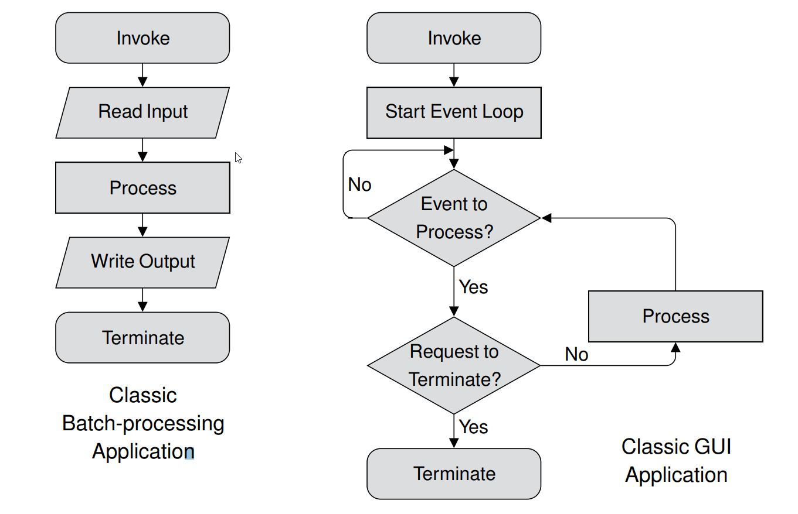

Pelican 是一套靜態網誌產生程式, 使用者可以從 https://github.com/getpelican/pelican 下載, 操作手冊位於 Pelican Document.
Markdown 中的連結
假如將上述超文件的 Markdown 列出, 就可以看出其中有三種引用全球資訊網 URL 連結的不同格式寫法:
[Pelican] 是一套靜態網誌產生程式, 使用者可以從 <https://github.com/getpelican/pelican> 下載, 操作手冊位於 [Pelican Document](http://docs.getpelican.com/en/stable/).
<!-- PELICAN_END_SUMMARY -->
<!-- 以下為 Pandoc Markdown 連結中的引用連結格式 -->
[Pelican]: https://github.com/getpelican/pelican
從 https://pandoc.org/MANUAL.html#reference-links 可以了解, 在 URL 網址前後加上尖括號 (angle brackets) 可以直接引用該連結, 轉成 html 之後, 就是一個以網址為連結文字的 anchor 標註, 假如在文章中需要透過關鍵字, 大量引用某一個網址，則可以使用 Reference Links, 也就是用中括號 (brackets) 圈住所要連結的按鈕文字後, 在文章任何地方, 以中括號標示引用的關鍵字, 然後加上冒號 (colon) 再接上點按該引用關鍵字後, 所要連結的網址. 也就是上段文句中, 一開頭引用 Pelican Github 倉儲的用法.
假如希望在文章中直接以按鈕關鍵字連接網站, 則可以使用 Inline Links, 也就是利用中括號 (brackets) 圈住所要連結的按鈕文字後, 直接 (中括號與小括號間不可以有空白) 加上以小括號 (parentheses) 圈起的網址.
與這些文字寫作相關的符號英文名稱, 可以參考 http://www.thepunctuationguide.com.
此外, 我們在 Markdown 格式文章中, 選擇採用 html 的註解格式, 當內容被轉換為 html 時, 仍會保留, 但是轉成 LaTeX 格式後, 這些原始內容中的註解將不會出現.
操作影片的引用
在超文件中引用操作影片, 使用者可以從嵌入的小視窗點擊後, 直接在瀏覽器上觀看影片. 但是若該影片嵌入經過 Pandoc 將 Markdown 格式內容, 先轉為 LaTeX 之後, 再輸出為 PDF 格式, 比較好的做法, 應該是呈現能夠代表該影片的圖片, 然後再提供連結到該影片的 URL.
Youtube 提供了直接透過影片連結, 取得代表圖片的方法, 例如: 影片連結為 https://www.youtube.com/watch?v=xCa6YX8vJOI 的代表圖片為:

從影片連結取得對應圖片的說明如下:
從 Vimeo 影片連結取相關圖片: https://coderwall.com/p/fdrdmg/get-a-thumbnail-from-a-vimeo-video
從 Youtube 影片連結取相關圖片: https://coderwall.com/p/nihgwq/get-a-thumbnail-from-a-youtube-video
以下則是利用 JQuery 與 Vimeo 的 API, 利用影片 id 擷取相關圖片的方法, 所使用的影片為 https://vimeo.com/243129278:
Javascript 程式碼與 img 標註如下:
圖片引用
在本網誌倉儲, 圖片目錄位於 data/images, 使用者可以利用:

直接引用這張圖:

數學方程式
在 Pelican 網誌中的 Markdown 可以輸入 LaTeX 格式的數學方程式, 例如: 下列數學式原始碼, 可以轉為動態 gif 圖檔.
$$Fit_{min} = \sum_{i=0}^{n}\sqrt{(O_{x,i}-N_{x,i})^2+(O_{y,i}-N_{y,i})^2}$$
轉換完成的數學方程式:
$$Fit_{min} = \sum_{i=0}^{n}\sqrt{(O_{x,i}-N_{x,i})^2+(O_{y,i}-N_{y,i})^2}$$
Pelican 文章中的 status
在 Pelican 中的 Markdown 格式, 支援 Status: draft 與 Status: published 等兩種 status, 前者代表尚未完成的草稿, 而後者的狀態為內建的"已經出版".
Git 與 Github
2017 Fall 的課程中, 首先導入的軟體組態管理系統為 Fossil SCM, 其特色是檔案小但是功能齊全, 可方便在區域或廣域網路上建立個人或團隊的專案倉儲, 但是若要擴大倉儲資料的應用性, 就必須使用 Git 與 Github, 至於 Bitbucket 與 Gitlab 或其他類似的服務, 則可用來做為主要倉儲的備份.
Github 的初步使用, 可以參考 https://guides.github.com/activities/hello-world/, 較完整的 Git 使用說明, 請參考 https://git-scm.com/book/zh-tw/v2.
課程實習
自第十二週起, 每一位學員必須利用各自學校配發的 Gmail 申請 Github 帳號, 計算機程式將以小組為單位, 練習利用分組 Github 倉儲, 協同開發 Python3 + PyQt5 程式, 並準備各組的簡報、網頁與 PDF 格式的期末報告.
電腦輔助設計實習課程學員, 尚未申請 Github 者, 也必須自行申請, 之後必須設法在小組倉儲中準備各組的簡報網頁與 PDF 格式的期末報告.
Comments
comments powered by Disqus